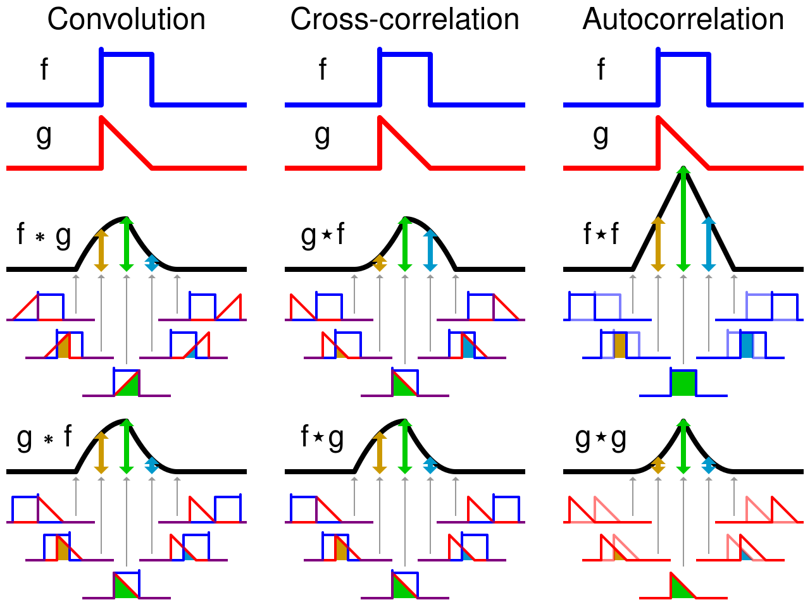
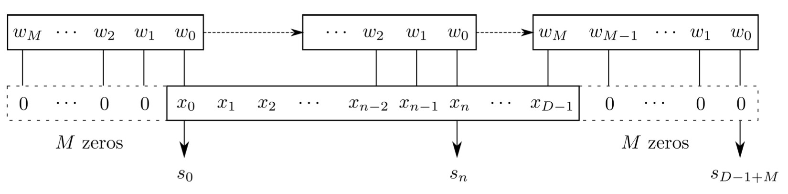
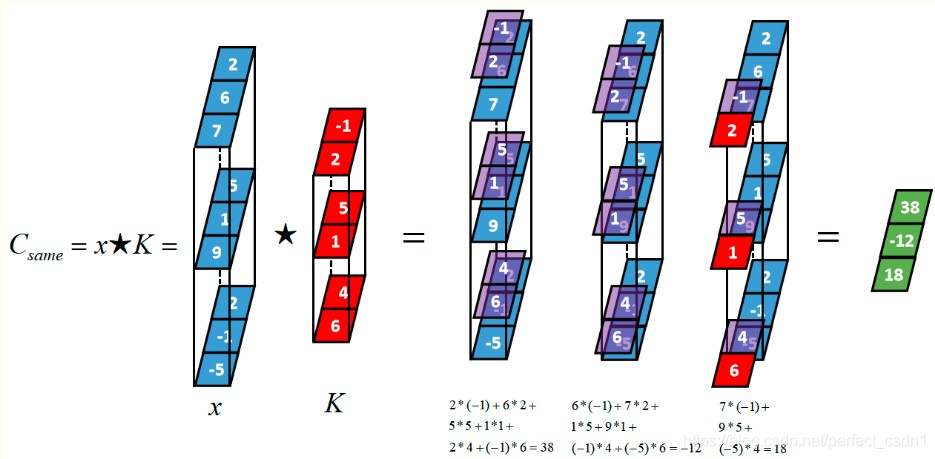
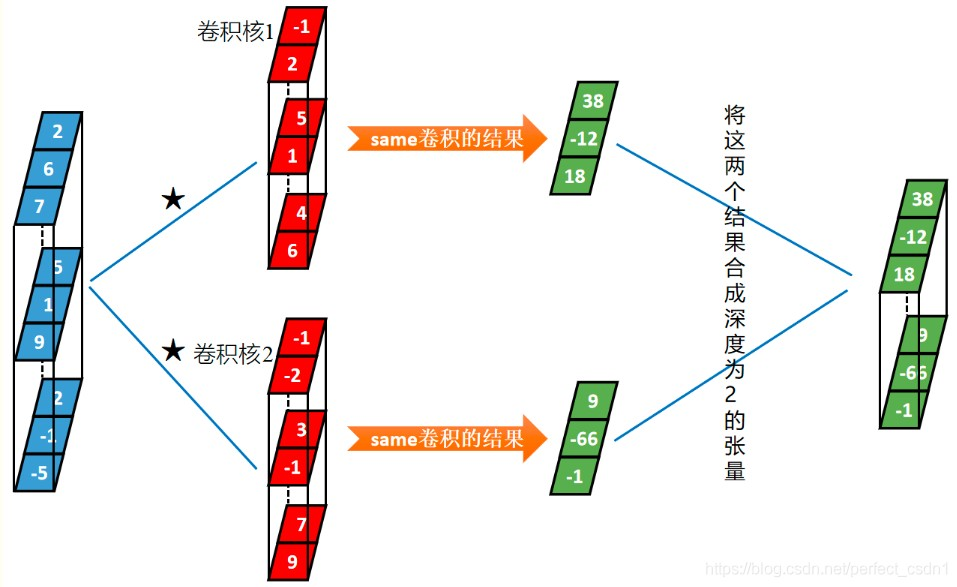
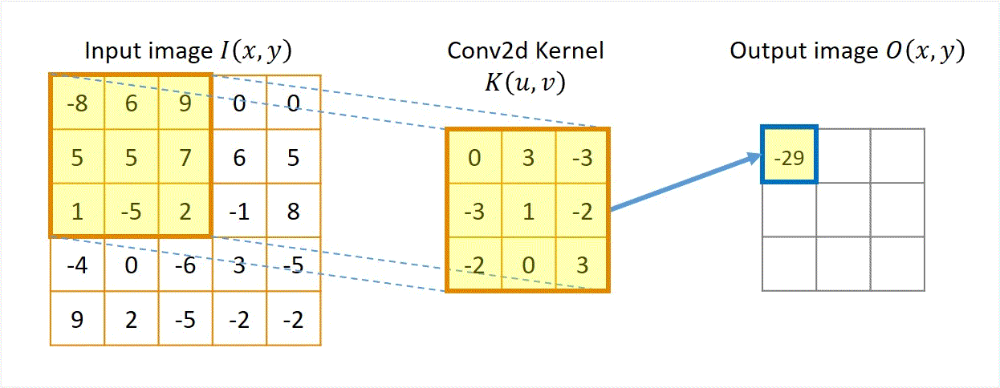

卷积(Convolution)
前言
第一次听说“卷积”这个词还是在大一时，在完成Matlab的一道设计扫雷游戏的一道课后题，许多同学用所谓的卷积方法，当时的我对此完全不理解，只是自己设计了一套循环来做计算。后来学习了一点卷积神经网络的知识，发现自己用的方法和所谓的卷积其实一回事情。然而，在大二学习数学物理方法后，即使经过繁多的计算训练，当时的我却迟迟无法把课本里的卷积和神经网络中的卷积联系起来，这是一件很遗憾的事情。现在随着AI4S的火热，我也打算重新系统性地学习一遍机器学习的有关知识，故有了这篇note，也弥补了当时的遗憾。
数学物理方法中的卷积——连续型卷积
根据wiki百科，卷积是通过两个函数$f$和$g$生成第三个函数的一种数学算子，表征函数$f$与经过翻转和平移的$g$的乘积函数所围成的曲边梯形的面积。简单来说就是对于定义在实数域$\mathbb{R}$的两个可积函数$ f(t) $与$ g(t) $的一种运算：
$$ s(t) = (f*g)(t) = f(t)*g(t) = \int_{-\infty}^{\infty} f(\tau)g(t-\tau)\mathrm{d}\tau , $$一般可以认为$ g(t) $是卷积核，它随着自变量移动。下图非常直观地解释了这种运算，如$ f*g $是蓝色的$ f $不移动，红色的$ g $一直在往右边走。

此外，卷积具有如下性质
- linearity: $(a_1 f(t) + a_2 f(t))*g(t) = a_1 f(t)*g(t)+a_2f(t)*g(t)$.
- time invariance: $f(t-T) * g(t-T) = (f*g)(t-2T), f(t) g(t-T) = (f * g)(t-T)$ .
在频域上的联系：对于$ f(t) $和$ g(t) $有傅里叶变换
$$ \begin{split} F(\omega) = \mathcal{F}\left[f(t)\right] = \int_{-\infty}^\infty f(t)e^{-i\omega t}\mathrm{d}t ,\\ G(\omega) = \mathcal{F}\left[g(t)\right] = \int_{-\infty}^\infty g(t)e^{-i\omega t}\mathrm{d}t , \end{split} $$有如下关系
- $\mathcal{F}[f(t)*g(t)] = F(\omega)G(\omega) .$
- $\mathcal{F}[f(t) \cdot g(t)] = F(\omega)*G(\omega) .$
多变量卷积公式：
$$ \begin{aligned} f(t_1,t_2,...,t_n)*g(t_1,t_2,...,t_n) &= \iint\cdots\int_{\mathbb{R}^n}f(\tau_1,\tau_2,...,\tau_n)g(t_1-\tau_1,t_2-\tau_2,...,t_n-\tau_n)\mathrm{d}\tau_1\mathrm{d}\tau_2\cdots\mathrm{d}\tau_n\\ & = \int_{\mathbb{R}^n}\mathrm{d}^n \tau f(\tau)g(t-\tau) . \end{aligned} $$神经网络中的卷积——离散型卷积
一维离散卷积
对于离散数据，如下为两种等价的记号
$$ \left\{\begin{matrix} x: x_0,x_1 , ..., x_{N-1} \\ \omega: \omega_0, \omega_1, ..., \omega_{M-1} \end{matrix}\right. \Leftrightarrow \left\{\begin{matrix} x[n]: n= 0,1 , ..., N-1 \\ \omega[n]: n= 0,1 , ..., M-1 \end{matrix}\right. . $$一般$x$为$N-1$个输入数据，$\omega$为卷积核，其长度为$M$，卷积的过程与连续的情况类似，这里$\omega$仍然是移动的，卷积的计算公式为
$$ s[n] = \sum_{m=\max(0,n-N)}^{\min(n,M)} x[m]\cdot\omega[n-m] ,\quad n=0.1,...,M+N-2 $$上式看似繁琐，不过可以举个简单的例子就会发现其并不复杂，对于$N=4, M=3 $的情况而言，有
$$ \begin{split} s_0 &= \omega_0 x_0\\ s_1 &= \omega_0 x_1 + \omega_1 x_0 \\ s_2 &= \omega_0 x_2 + \omega_1 x_1 + \omega_2 x_0\\ s_3 &= \omega_0 x_3 + \omega_1 x_2 + \omega_2 x_1 \\ s_4 &= \omega_1 x_3 + \omega_2 x_2\\ s_5 &= \omega_2 x_3 \end{split} $$也可以如下图理解

此外，还可以将其写作矩阵形式$(N=4, M=3)$:
$$ \mathbf{s} = \begin{bmatrix} s_0 & s_1 & \cdots & s_k \end{bmatrix} = \begin{bmatrix} x_0 & x_1 & \cdots & x_k \end{bmatrix} \cdot \begin{bmatrix} \omega_0 & \omega_1 & \omega_2 & 0 & 0 & 0 \\ 0 & \omega_0 & \omega_1 & \omega_2 & 0 & 0 \\ 0 & 0 & \omega_0 & \omega_1 & \omega_2 & 0 \\ 0 & 0 & 0 & \omega_0 & \omega_1 & \omega_2 \end{bmatrix} = \mathbf{x} \cdot \mathbf{\omega} $$对于深度学习，数据有一个深度的维度，值得注意的是输入数据与卷积核的深度必须是相同的，前面的例子深度都是1，下图是一个深度为3的例子，其中$K$代表卷积核，数据变换格式：[样本个数, 深度，样本长度]，即有
$$ [x]*[K]\to [y] , \Rightarrow[1,3,3]*[1,3,3]\to [1,1,3] , $$第一个$[1,1,3]$代表输入数据，第二个$[1,3,3]$代表卷积核，第三个$[1,1,3]$代表输出数据。

此外，还有多个卷积核的情况，实际就是把输入数据与每一个卷积核做卷积，再将卷积的结果在深度方向上连接得到一个输出张量，如下图所示

其数据格式变换为：$[1,3,3]*[2,3,2]\to [1,2,3] ,$ 这里由于卷积核2的存在，其结果放在输出数据的深度方向上与卷积核1的结果连接起来。
二维离散卷积
对于二维的情况，原来的数据格式 [样本个数, 深度，样本长度] 需要变为 [样本个数, 深度，样本长度，样本宽度]，也就是数据个数这一栏需要加一个维度，其过程如下图所示

上图的数据格式变换为：
$$ [1,1,5,5]*[1,1,3,3]\to [1,1,3,3] $$对于增加深度维度，以及多个卷积核的运算过程和一维离散的情况完全相同，这里不再赘述。
对于开头提到的扫雷游戏的设计其实就是一个二维卷积，把整个扫雷的地图变成矩阵，同时最外圈用0拓展，每一个位置就是矩阵中对应的位置，那么只需要把有雷的位置设置为1，我们称这个矩阵为地图矩阵。通过一个$3\times3$的除了中间位置是0其它全是1的矩阵作为卷积核，那么把地图矩阵和卷积核作卷积即可得到对应的结果，即地图上每个位置周围的雷的个数。
当然，卷积可不仅仅用在扫雷上如此简单，其在深度学习的图像处理发挥很大的作用，例如在深度学习中，卷积神经网络（CNN）利用卷积操作来提取图像的特征。与扫雷游戏中的简单卷积不同，深度学习中的卷积核通常是可学习的参数，通过训练数据来自动调整，以捕捉图像中的有用特征。这些特征可以用于各种任务，如图像分类、目标检测和图像分割。
参考：
https://slides.com/iphysresearch/gwda_coding_4_cnn#/5/3
https://coolgpu.github.io/coolgpu_blog/github/pages/2020/10/04/convolution.html